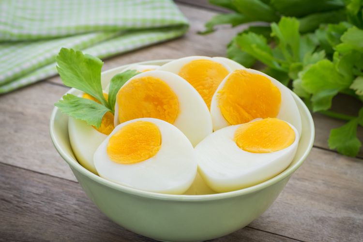
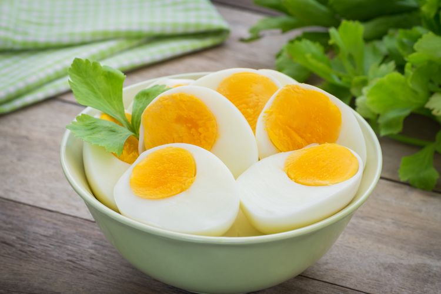

Exercise Recommendations


Diet yang seimbang dan berolahraga secara teratur merupakan kombinasi efektif untuk mencapai dan menjaga berat badan ideal. Diet yang tepat dapat membantu mengontrol asupan kalori, memberikan nutrisi esensial bagi tubuh, dan mendukung fungsi organ-organ vital. Selain itu, diet yang sehat juga memiliki peran penting dalam meningkatkan mood, energi, serta mengurangi risiko berbagai penyakit kronis. Berolahraga merupakan bagian integral dari upaya penurunan berat badan. Aktivitas fisik dapat membakar kalori, meningkatkan metabolisme, serta memperkuat otot dan tulang. Berbagai jenis olahraga menurunkan berat badan, seperti berjalan kaki, jogging, bela diri, berenang, dan lainnya, dapat menjadi pilihan untuk meningkatkan kebugaran dan membantu mencapai tujuan penurunan berat badan. Dengan mengombinasikan diet sehat dan rutin berolahraga, Anda tidak hanya dapat mencapai berat badan yang diinginkan, tetapi juga meningkatkan kesehatan secara keseluruhan. Penting untuk diingat bahwa setiap perubahan gaya hidup harus konsisten dan disesuaikan dengan kebutuhan serta kenyamanan individu. Sebaiknya konsultasikan dengan profesional kesehatan atau ahli gizi untuk merancang program diet dan olahraga yang sesuai dengan kondisi tubuh dan tujuan penurunan berat badan Anda.
Ditulis oleh Annisa HapsariDitinjau secara medis oleh dr. Andreas Wilson Setiawan
General Practitioner, Rumah Sakit Universitas Indonesia (RSUI)
Food Recommendations


 



Makanan memainkan peran penting dalam mencapai tujuan penurunan berat badan dan mencapai tubuh yang lebih ramping. Keunggulan makanan ini terletak pada kemampuannya membantu tubuh merasa kenyang lebih lama, memberikan Anda kontrol lebih besar terhadap asupan kalori. Dalam mencapai berat badan yang diinginkan, rutin berolahraga merupakan langkah awal yang penting, namun, kesuksesan juga bergantung pada pola makan sehat. Pemilihan makanan yang tepat merupakan kunci dalam menciptakan pola makan sehat yang mendukung program penurunan berat badan. Daftar makanan penurun berat badan yang disajikan di samping memberikan opsi bervariasi baik untuk kesehatan. Dalam menjalani program diet, disarankan untuk yang selalu berdiskusi dengan dokter atau ahli gizi. Konsultasi ini membantu memastikan bahwa makanan yang Anda pilih sesuai dengan kebutuhan kesehatan dan kondisi tubuh Anda. Terdapat gambar-gambar yang akan direkomendasikan sebagai panduan visual terkait makanan-makanan tersebut, sehingga dapat mempermudah pemahaman dan penerapan dalam program penurunan berat badan Anda. Oleh karena itu, kombinasi antara pola makan sehat, olahraga rutin, dan konsultasi dengan tenaga medis dapat menjadi langkah cerdas dalam mencapai tujuan penurunan berat badan yang efektif dan berkelanjutan.
Ditulis oleh: Widya Citra AndiniDitinjau secara medis oleh: dr. Patricia Lukas Goentoro
General Practitioner, Rumah Sakit Universitas Indonesia (RSUI)